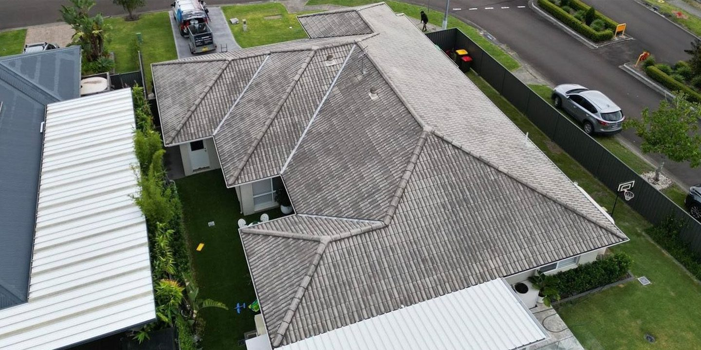

Flat colour planes, 1px hairline borders, no shadows. Two radii only: square structure (cards, panels, inputs, tiles) and full-pill touch controls (buttons, chips). A white ground with powder panels carrying warm espresso ink, and a single accent — tile maroon. af Another Sans sets the headings; Outfit carries the interface. These tokens map one-to-one onto the React Native theme.
One accent: maroon #7D1017 — matching the client's own site (roofbros.com.au), which uses maroon + neutrals. Maroon does everything active: buttons, selection, focus, progress. Secondary links and pagination use a single harmonised slate-blue (the only blue in the system) — the familiar link convention, tuned to sit with the warm palette. Anything informational that isn't maroon uses ink/charcoal. Per screen this lands ~92% neutral, ~8% maroon. Semantic green/amber/red appear only as status — never decoration.
Every text/background pairing above is contrast-verified at 4.5:1 (normal text) or better — not eyeballed. Several of these exact values were corrected during a pass for this reason (muted, placeholder, warning, success all shifted slightly darker from earlier drafts). Dark theme inverts to deep espresso grounds (#221B15) with pale warm ink and its own re-tuned accent (#8E141C) and link colour (#8FA9D8) — light theme is the field default, locked for these documents regardless of OS dark mode.
Two faces, one weight each — mirroring the reference exactly: headings, buttons, labels and numbers all run af Another Sans (a.Foundry — the distinctive tekt neo-grotesk, and the display face); body, UI, labels and data are set in Outfit — the client's own brand font (roofbros.com.au), free and fully variable, so every weight is available. Headings carry character; Outfit carries readability. af Another Sans is commercial (Albert Sans is the free fallback); Outfit is free.
af Another Sans (600) sets headings, screen titles,
the wordmark and the big measurement figures — the character.
Outfit (400–600, variable) sets everything else —
body, buttons, labels, data. Its full weight range is what gives real
hierarchy. All figures set tabular-nums.
Just two radii: 0 for everything structural — cards, panels, inputs, imagery, tiles — and full-pill for touch controls: buttons, chips, status pills. (Bottom sheets keep a rounded top by OS convention.) Square inputs give the construction feel; the pill CTA against square content is the emphasis trick (Fitts + Von Restorff). Never invent in-between values — pick from the scale.
Zero box-shadows on any in-app surface, at any state, ever. Structure comes from 1px hairline borders — ink (#2D2012) on interactive edges, the warm neutral #E2DCD4 on passive ones — and flat plane changes. The only bezel in this whole package is the phone-mockup chrome itself, which is presentational, not app UI.
Spacing steps 4 / 8 / 12 / 16 / 24 / 32. Screen gutters 16, card padding 12–20, section gaps 24.
44×44px is the hard floor for every interactive control, not just buttons — icon buttons, filter chips, tab bar cells. Primary CTAs go further, ≥48px. Compact inline controls may be 36px visually with the touch area expanded via hitSlop. Roofers wear gloves.
Locked: one outline family only — 24 viewBox,
2px stroke, round caps, no solid icons mixed in. Sourced from
open-licence packs plus hand-drawn paths (tracked in README),
unified at 20–28px via CSS masks so every icon inherits
currentColor. No emoji in UI chrome. The one
deliberate exception: Apple and Google's sign-in marks, which
stay at their real trademarked shape/colour rather than being
reskinned into our system — a mockup approximation only, to be
swapped for each platform's official button component before
shipping.
The aerial roof photo is the hero of every job — full-bleed with the measurement polygon always drawn. Never remove the overlay.
Text is Outfit 500 (Medium), 15px on every button, set in a full-pill shape — the rounded CTA against square content is what makes the action unmissable. Medium weight reads cleaner than SemiBold on a filled surface while staying confident. Every primary action is maroon. Hierarchy comes from fill vs hairline-outline vs plain text.
| Variant | Padding | Height |
|---|---|---|
| Primary | 14px 20px, full-width | ≥48px |
| Secondary (hairline) | 12px 18px | 44px |
| Compact inline | 8px 14px | 36px visual + hitSlop to 44px |
Press state: background darkens to accent-press + scale 0.97 over 150ms. Never ship a primary CTA under 48px.
ServiceM8 model: fixed colour + label per status, advanced by events (quote saved, delivery requested), never manual fiddling. Aging dot on Quoted: amber at 7 idle days, red at 14 — a distinct signal from the status colour itself, meant to vary independently of it. Delivered is green and is the terminal state — there's no separate "Complete" status; the job-detail timeline already treats "Delivered" as the true end of the job, so a second terminal status was redundant and has been removed.
Active chip inverts to ink. Pill-shaped, hairline-bordered, 44px min-height (touch floor, not just the 12.5px sans 600 label) — chips, status pills and buttons are all pills; every touch control is rounded.

Roof thumbnail from the measurement image; address leads; value right-aligned, tabular. Whole card is one tap target.
Powder panel, oversized tabular numerals, caps label. Exact values with stated tolerance — never round away precision.
Steppers, never free-text numerics. Edited lines get an "adjusted" marker with one-tap revert to the calculator value. Quantities are transactionally safe.
Real tile photos in production. Tap = apply instantly; long-press = favourite; shortlist capped at 8. Names follow AU convention: "Marseille Titan Gloss", "Elabana Barramundi".
50px min height, square flat field on a neutral grey (#F5F5F5). On focus the field lifts to pure white with a thin, low-opacity ink border — soft enough to stay quiet, but a real edge (not just a fill shift) so it still reads in direct sunlight. Autocomplete over typing wherever possible.
Related fields bound into one grey unit with hairline dividers (Gestalt common region) — the active row lifts to white with the same thin, low-opacity border used by every field. Use for any multi-field form; single fields stay flat.
Binary choices as full-width segments — used for delivery method, job type, ground drop vs rooftop load.
Flat and uniform — no raised FAB, no square-tile exception for "New." Inactive tabs are ink (never a lighter grey), both icon and label. The active tab turns only its icon maroon; the label stays ink, keeping the one accent as small as possible even in navigation.
That code’s incorrect. Check it or resend below.
Same field system as everything else: grey at rest, white + soft hairline when active. Error state lifts to white too, but outlines in status-red with an inline message — never just a colour change with no explanation.
The one deliberate exception to our own icon system: both marks stay at their real trademarked shape/colour rather than being reskinned into the one-outline-family rule. Grouped with the primary button below the form, not competing with it above — two columns to keep the row compact. Placeholder logos only; swap for each platform's official button component before shipping (Apple's Human Interface Guidelines and Google's Sign-In branding are both enforced, not optional).
Tapping the search icon swaps it for a full-width field at the same 52px height as every other input, plus the same × used to dismiss every other screen — not a text “Cancel” link, and not the OS-native rounded search bar.
Each exists because a competitor shipped the opposite and paid in 1-star reviews. Full evidence in the research document.
Line items are transactionally safe (RoofSnap's "resets to 25" bug).
Drafts persist locally on every change (QuoteIQ's data-eating update).
22.4°, not 22° — rounded pitch forces site visits (RoofSnap).
What went wrong + the next action (Hover's "No good corner shot").
Status always visible; failure notifies loudly (Hover, QXO).
The roof polygon on imagery is permanent UI (EagleView's backlash).
Last jobs, images and swatches readable without signal (iRoofing mid-pitch drops).
Native nav, sheets, haptics, 60fps lists (Roofr's web-wrapper complaints).
Steppers, chips, pickers; free text only for notes. Gloves.
AA contrast minimum; test outdoors on a phone.
Totals inclusive, "GST included: $X" subline (ServiceM8 convention).
Background sync with per-photo status; never add taps to capture.